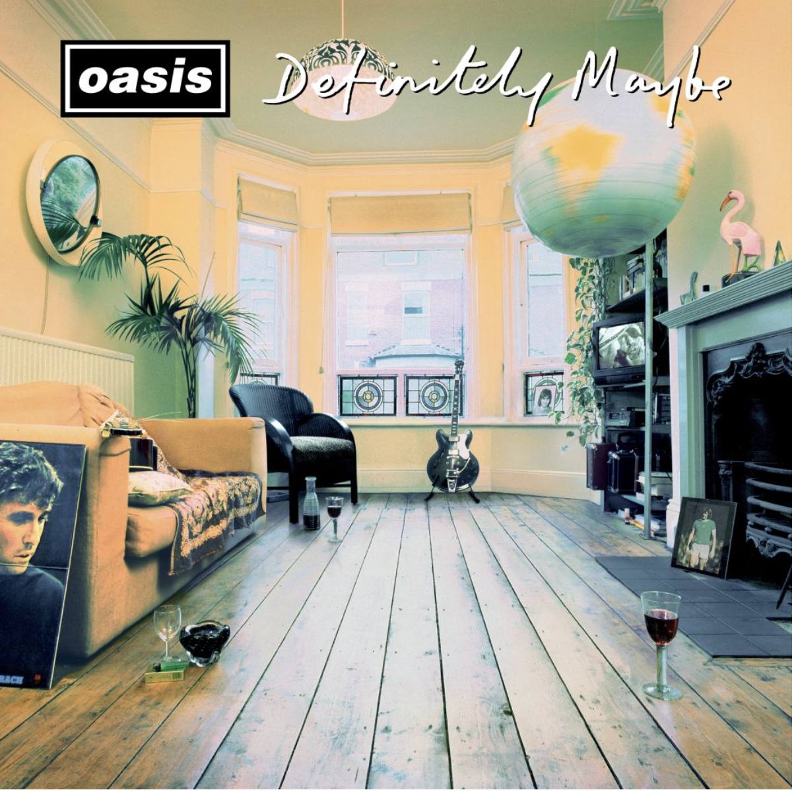

Featuring previously unheard versions from the original discarded album session at Monnow Valley and
outtakes from the definitive recording at Sawmills Studios, newly mixed for the first time by Noel
Available on deluxe 4LP, 2CD, coloured vinyl, cassette and digitally with new artwork and sleeve notes
Out Now

“One of the all-time greatest debuts, now with a bonus disc … a fascinating package.”
***** MOJO
“This latest reissue does a brilliant job of telling the story … Thirty years on, it remains a perfectly
realised rock ‘n’ roll album, and sounds just as exciting now as it did then.”
9/10 UNCUT
“Definitely Maybe remains their finest album. To revisit this album is to experience again a frisson of
wild excitement.”
**** Record Collector
“Finally, fans can hear the infamous original album sessions. What an album. What great additions.”
**** Classic Pop
“Every track on it either was a single or just acted like it was. This remains a fantastic debut.”
Classic Rock 8/10